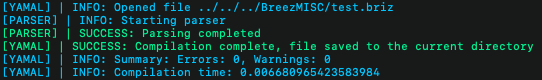

Quickstart guide
Welcome to the Breez quickstart guide, this guide is aimed to get new users familiar with the basic concepts of Breez Continue down below to get started.
What Is Breez Anyway?
Breez is a compiler / transpiler for the Kerbal Space Program mod called kOS. It is used for programming various things like rockets, planes and more. Since kOS is somewhat overly verbose (as it's meant for newer programmers) we decided to create a much more compact and true to life language.
You can do a lot in Breez, and our current list of "Tokens" is always growing to cover everything in the kOS language.
If you haven't already, please visit the Download and installation guide
First Breez Program
Your first program in a language you've never used is usually a "Hello World" program, however we're going to make a countdown script (because we're talking about rockets science).
To get started, open up a text editor and feel free to follow along.
global unusedVariable => 1; for local terminalCount => 10, terminalCount != 0, --terminalCount { # until the variable = 0, take away 1 each time the loop finishes. clear(); # This clears the terminal each time, so you dont have a list of numbers. print(terminalCount) # This outputs the variable onto your terminal so you can see how close you are to T-0. hold(1); # Similar to how we use Wait in kOS, this waits 1 second. };
Now, try to compile the code above with breez <Filename>.briz (or if you have installed Breez manually, run python3 Yamal.py <Filename>.briz ), and then run it in your game, and then come back to the guide! What are your results, did you get the annoying error sound? Good.
As you can probably tell, we have missed a semicolon (which is a common mistake amongst programmers) so always check your code for bugs! To fix it, just simply put a semicolon at the end of line 5, now try again!
Now, you should see something like this (don't be scared if your output isn't colored, Windows just doesn't support ANSI color codes):
You also probably see a warning that says that variable unusedVariable isn't used, it's completely normal and will also show up if you have an unused functions. This was implemented to minimize space taken up by the program on kOS CPU